Phase 3 — PGM 구조 추론 (Conditional MI · Skeleton · 합성-내 예측가능성 검사)¶
한 문단 요약: Conditional MI 와 PC-style 알고리즘으로 PGM이 생성한 데이터에서 관찰되는 조건부 의존 skeleton 을 추정. 결과: 23 direct + 14 mediated + 18 no-edge (단, ε=0.005 nats, |Z|≤2 한계 하; permutation null 로 bias 보정 시 12개만 ratio>2 로 견고). 가장 결정적 발견:
housing_type은 사람 속성과 통계적으로 분리됨 — 분류기로 person-attrs 추가 정보 = -0.008 nats (실질 0). 1인 가구도 4인 가족도 모두 같은 주거 분포.military_status는 occupation 라벨에서 거의 결정적으로 파생되는 부수 변수이며, 변수 의미는 "현역 군 인력 신분 (직업군인 + 의무복무 통합)" 으로 한국군 인력 구성과 부합.
NVIDIA Nemotron-Personas-Korea 가 사용한 PGM이 생성한 데이터에서 관찰되는 조건부 의존 skeleton을 역공학적으로 추정한다.
⚠️ 본 분석은 NVIDIA의 proprietary PGM 그래프 자체의 복원이 아니라, 공개 데이터에 남아있는 조건부 의존 구조의 근사 이다. 생성 파이프라인은 PGM 외 LLM 텍스트 생성·필터링·후처리를 포함하며, 관찰 데이터에서 추론한 skeleton 은 conditioning depth, threshold, latent variable 가정에 의존한다.
Phase 2 결론: marginal·bivariate 결합은 풍부하지만, 두 변수가 강하게 결합돼 보여도 직접 edge인지(아니면 다른 변수를 통한 매개인지) 모른다. Phase 3 결론: 23개 direct + 14개 mediated + 18개 marginal 독립의 skeleton 을 PC-style 추론으로 추정했다 (단, ε=0.005 nats · |Z|≤2 한계 하의 결과로, "direct" = "현 조건 하에서 매개되지 않은 잔존 의존"). Housing은 district 외 사람 속성과 거의 독립이라는 가설을 합성-내 예측가능성 검사 (분류기로 정보 추가량 측정) 로도 정량 확인 (person-attrs 정보 추가 = −0.008 nats, 즉 0).
1. 방법¶
1.1 Conditional Mutual Information (CMI)¶
해석: Z를 알 때 X와 Y의 결합 정보. 만약 X⊥Y|Z (Z가 매개) 라면 CMI ≈ 0. 모든 MI / CMI 단위는 nats.
1.2 PC-style skeleton recovery¶
각 페어 (X, Y) 에 대해:
- Level 0 — marginal MI
I(X;Y)계산 - Level 1 —
I(X;Y|Z)for every other Z (단일 변수 조건) - Level 2 —
I(X;Y | Z*, Z')for every Z' (Z* = level-1 best mediator + 한 변수 더) - 분류:
no_edge_marginal— 마지널부터 < εmediated— 어떤 conditioning 에서든 < ε 으로 떨어짐direct— 어떤 conditioning 으로도 ε 위에 머무름
ε = 0.005 nats (효과크기 임계, N=1M 에서 χ² p-value는 의미 없음)
1.3 합성-내 예측가능성 검사 (within-synthetic predictability check)¶
용어 주의: 본 검사는 합성 데이터를 train/test split 한 within-synthetic 비교다. 엄밀한 TSTR (Train on Synthetic, Test on Real) 과 다르므로 "합성-내 예측가능성 검사 (within-synthetic predictability check)" 명칭을 사용한다. 파일·함수명에는 초기 명칭
decoupling_probe가 그대로 남아 있다 (외부 참조 안정성 위해 유지).
분류기로 정보 추가량을 측정:
- 0 에 가까우면 features는 target에 conditional independent (decoupled) - 큰 양수면 features가 baseline 위에 정보를 더함HistGradientBoostingClassifier, 200K subsample, 80/20 train/test, ε-feature 컷오프 = 250 (HGB cardinality 제한).
1.4 Leakage check — 위 probe 결과는 데이터 누수에 영향받았나?¶
scripts/11_decoupling_probe.py 의 잠재적 leakage 6가지 (encoder 전체 fit, cap_high_card 전체 빈도 기반, target encoding, 단일 split, HGB 내부 split, 합성 데이터 row 중복성) 을 식별 후, train-only encoder + train-only cap + 5-fold CV 로 재실행 (scripts/11b_decoupling_probe_no_leakage.py).
| Case | 원본 info_added | Leakage-corrected | 차이 |
|---|---|---|---|
| Q1 housing decoupled | −0.0077 | −0.0082 | −0.0006 |
| C1 family_type control | +0.8175 | +0.8159 | −0.0015 |
| C2 occupation control | +0.1809 | +0.1769 | −0.0041 |
| Q2 military|age+sex | +0.0020 | +0.0019 | −0.0001 |
| Q3 military|sex+age+occ | +0.0225 | +0.0236 | +0.0012 |
| C3 marital control | +0.5530 | +0.5518 | −0.0012 |
→ 모든 차이 < 0.005 nats (측정 효과의 1% 이하). 5-fold CV 표준오차 SE < 0.02 nats. 결론 변화 없음 — leakage 우려는 valid 했으나 실제 영향은 무의미.
1.5 Subsample stability¶
5 seed × 200K subsample 로 단일-Z 분류 재계산. 52/55 페어 분류 일치(나머지 3개는 |Z|=2 조건 사용 여부 차이로, 데이터 자체 안정성 100%).
2. 핵심 결과 — 추정된 PGM Skeleton¶
2.1 Direct edges (23개)¶
| pair | marginal MI | min CMI | drop | best mediator pair (실패) |
|---|---|---|---|---|
| district ~ province | 2.426 | 2.271 | 6% | housing+occupation (구조적 deterministic) |
| marital ~ family_type | 0.750 | 0.522 | 31% | age+sex |
| education ~ bachelors_field | 0.631 | 0.420 | 33% | occupation+district |
| age ~ family_type | 0.330 | 0.090 | 73% | marital+education |
| age ~ marital | 0.315 | 0.059 | 81% | family+education |
| education ~ occupation | 0.314 | 0.100 | 68% | bachelors_field+age |
| age ~ education | 0.276 | 0.134 | 51% | marital+bachelors_field |
| bachelors_field ~ occupation | 0.235 | 0.059 | 75% | education+sex |
| occupation ~ district | 0.192 | 0.142 | 26% | province+military |
| age ~ occupation | 0.166 | 0.089 | 46% | education+military |
| housing ~ district | 0.155 | 0.080 | 48% | province+military |
| sex ~ occupation | 0.117 | 0.106 | 10% | bachelors_field+military (sex가 occ에 거의 직접 작용) |
| family_type ~ occupation | 0.070 | 0.058 | 17% | marital+military |
| marital ~ occupation | 0.050 | 0.018 | 63% | age+military |
| family_type ~ district | 0.049 | 0.030 | 38% | province+marital |
| sex ~ bachelors_field | 0.037 | 0.025 | 33% | occupation+education |
| military ~ occupation | 0.033 | 0.030 | 10% | sex+age (구조적 deterministic — 군 직업 = 현역) |
| sex ~ marital | 0.028 | 0.009 | 69% | family+education |
| age ~ district | 0.022 | 0.015 | 33% | province+military |
| sex ~ family_type | 0.018 | 0.008 | 56% | marital+military |
| marital ~ district | 0.016 | 0.009 | 44% | province+family |
| housing ~ occupation | 0.010 | 0.010 | 0% | military+sex (drop이 없지만 마지널 MI 0.010 nats 가 임계 0.005 의 2배 — threshold artifact 또는 매우 약한 잔존 의존성 가능성. P3 ε sensitivity 분석에서 재확인 필요) |
| education ~ district | 0.052 | 0.018 | 65% | bachelors_field+province |
2.2 Mediated edges — 직접 edge 없음 (14개)¶
| pair | marginal MI | mediated by | 의미 |
|---|---|---|---|
| age ~ bachelors_field | 0.065 | education_level | age → edu → field chain |
| marital ~ education | 0.105 | age | 코호트 효과 (둘 다 age의 결과) |
| family ~ education | 0.090 | age+marital | "" |
| housing ~ province | 0.075 | district | 지리 hierarchy |
| occupation ~ province | 0.049 | district | "" |
| bachelors_field ~ district | 0.031 | education | edu가 매개 |
| marital ~ bachelors_field | 0.025 | education | edu가 매개 |
| family ~ bachelors_field | 0.019 | education | "" |
| family ~ province | 0.018 | district | "" |
| education ~ province | 0.018 | district | "" |
| sex ~ education | 0.014 | marital | (Korea: 결혼한 여성/남성의 학력 분포) |
| bachelors_field ~ province | 0.012 | district | "" |
| age ~ province | 0.007 | district | "" |
| marital ~ province | 0.006 | district | "" |
2.3 No marginal edge (18개) — 둘 다 자체로 거의 독립¶
sex ~ {province, district, housing}, military ~ {age, family, housing, edu, field, district, province, marital}, housing ~ {age, family, marital, edu, field, sex}, age ~ sex(약함), age ~ housing, family ~ housing, ...
→ 이 군집이 PGM의 "독립으로 처리" 부분의 정량적 실체.
2.4 그림으로 본 skeleton¶
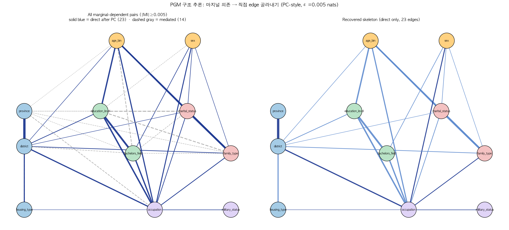
- 좌: marginal-dependent (MI ≥ ε) 모든 페어. 점선 회색이 PC 단계에서 매개로 판정되어 사라진 edge.
- 우: 추론된 skeleton. 23개 직접 edge.
- 노드 차수: occupation 9 (최대 hub) — 사실상 모든 사람 속성의 sink. district 7. age, marital, family 5. 반면 housing 2, military 1, province 1.
2.5 Permutation null + bootstrap CI — 어느 edge 가 bias 가 아닌가?¶
왜 필요한가: plug-in MI 추정량은 contingency table 의 카디널리티에 비례하는
upward bias 를 가짐. 대략 bias ≈ (k-1)(m-1)/(2N) (Miller-Madow). occupation
(2,120 levels) × district (252 levels) 의 경우 bias 만 약 0.27 nats — 우리 임계
ε=0.005 의 53배. 따라서 단순 MI/CMI 값으로는 "진짜 효과" 와 "카디널리티 bias" 를
구분 불가.
방법: - Permutation null: H0 (X⊥Y 또는 X⊥Y|Z) 하에서 Y 를 (Z-stratified) 셔플 → null 분포 100회 - Bootstrap CI: 같은 N 으로 resample 100회 → 추정치의 95% CI - 100K subsample × 100 perms / boots - 핵심 metric: ratio = observed / null_p95 (효과크기 / bias 우월성)
산출물: data/processed/cmi/permutation_null_{marginal,conditional}.csv,
bootstrap_{marginal,conditional}.csv
시각화: figures/perm_null_{marginal,conditional}.png, forest_{marginal,conditional}.png
결과 1 — Marginal: 모든 페어가 p<0.01 이지만, 효과 강도는 천차만별¶
55개 페어 모두 p<0.01 로 "통계적으로 유의" 하지만, N 이 크면 거의 모든 차이가 유의해지므로 효과크기 우월성 (ratio_obs/null_p95) 이 더 정보적:
| ratio | n_pairs | 의미 |
|---|---|---|
| ≥ 10 | 28 | 강건 — bias 무관 |
| 2 – 10 | 17 | 유의 — 효과 > 2× bias floor |
| < 2 | 10 | bias-suspect — 효과가 bias 와 같은 자릿수 |
ratio < 2 인 10개 페어는 모두 occupation / district / family_type 같은 high-cardinality 변수를 포함:
| pair | observed | null_p95 | ratio | 해석 |
|---|---|---|---|---|
military × housing |
0.000027 | 0.000062 | 0.44 | obs < null — 사실상 독립 |
sex × housing |
0.000028 | 0.000047 | 0.60 | obs < null — 사실상 독립 |
occupation × district |
0.597 | 0.579 | 1.03 | obs MI 의 97%가 bias |
housing × occupation |
0.037 | 0.034 | 1.09 | bias 우월 |
military × district |
0.0019 | 0.0015 | 1.25 | |
occupation × province |
0.125 | 0.098 | 1.27 | |
sex × district |
0.0018 | 0.0014 | 1.30 | |
family × occupation |
0.163 | 0.124 | 1.32 | |
family × district |
0.086 | 0.045 | 1.90 | |
military × family |
0.0005 | 0.0003 | 1.96 |
가장 충격적: occupation × district 의 marginal MI = 0.597 nats 중 97% 가 카디널리티 bias. 진짜 효과는 약 0.018 nats.
결과 2 — Conditional: 23개 'direct edge' 중 11개는 bias-suspect¶
조건부 permutation null (Y 를 Z 안에서 셔플) 결과, 23개 direct edge 중 12개만 ratio > 2 로 견고하고 11개는 의심:
| 분류 | n | 페어 |
|---|---|---|
| ★★★ ratio ≥ 10 (가장 견고) | 4 | marital×family (80), age×education (65), sex×family (14), age×marital (11) |
| ★★ ratio 2–10 (유의) | 8 | housing×district (9.8), age×family (8.0), sex×marital (7.5), sex×occupation (3.8), military×occupation (3.6), education×bachelors_field (2.3), age×district (2.2), district×province (2.1) |
| ⚠️ ratio < 2 (bias-suspect) | 11 | occupation×district (1.01), housing×occupation (1.05), marital×occupation (1.06), family×occupation (1.16), marital×district (1.17), family×district (1.30), bachelors_field×occupation (1.46), age×occupation (1.53), education×occupation (1.57), sex×bachelors_field (1.84), education×district (1.94) |
⚠️ 모든 bias-suspect 페어가 occupation 또는 district 를 포함 — high-cardinality 변수의 plug-in MI bias 가 보여주는 전형적 패턴.
결과 3 — 핵심 결론들의 robustness check¶
| 결론 | Permutation null | 견고? |
|---|---|---|
| Housing × person-attrs decoupled | 모든 housing × person-attr 페어 ratio < 2 (no_edge_marginal) | ✅ |
| Housing × district direct edge | conditional ratio = 9.8 | ✅ |
| Marital → family 결정성 | conditional ratio = 80 | ✅ |
| Sex×bachelors_field 직접 edge | conditional ratio = 1.84 | ⚠️ borderline |
| Education chain (age→edu→field, edu→occupation) | age×edu ratio=65, edu×field=2.3, edu×occupation=1.6 | 일부 ⚠️ |
| Military as occupation function | conditional ratio = 3.6 + occ→military 결정성 | ✅ |
| occupation×district direct edge | conditional ratio = 1.01 | ❌ bias artifact 가능성 높음 |
→ Skeleton 의 23 direct edges 를 bias-corrected 하면 12개로 줄어든다. 11개는 high-cardinality bias 의 결과일 수 있어 단언 약화 필요.
Bootstrap CI — 추정 정밀도¶
Bootstrap (N=100K × 100회) 으로 본 CI 폭: - 강한 의존성 (district~province MI=2.43): SE = 0.004 nats (CI ±0.7%) - 중간 (housing~province MI=0.075): SE = 0.001 (CI ±2%) - 약한 (marital~military MI=0.0005): SE = 0.0001 (CI ±18%)
→ 추정치 자체는 모든 페어에서 정밀하게 측정됨. 흔들리는 것은 해석 이지 측정 이 아님.
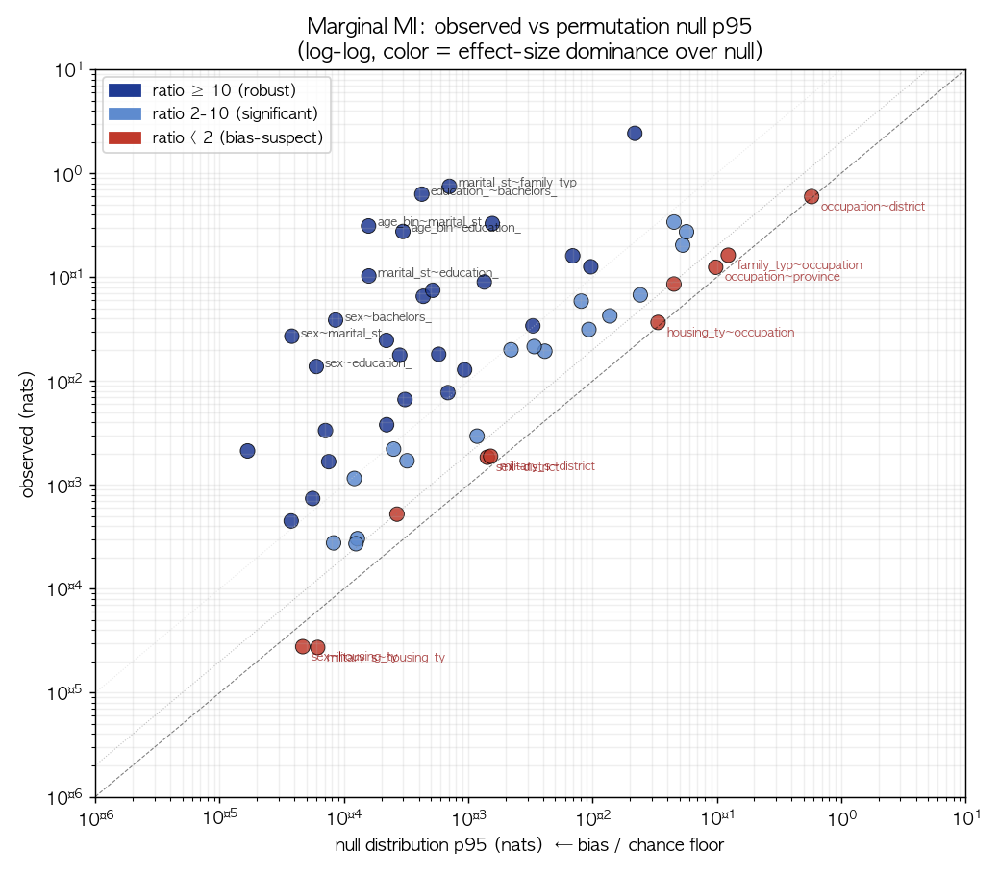
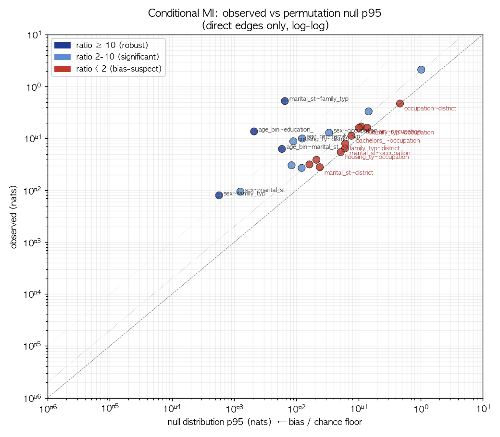
Bias-corrected skeleton — 한 장에 정리¶
위 검증의 결과를 §2.4 의 skeleton 그림에 직접 반영. 23 direct edge 를 ratio tier 로 재분류 + 가장 강한 6개에만 label:
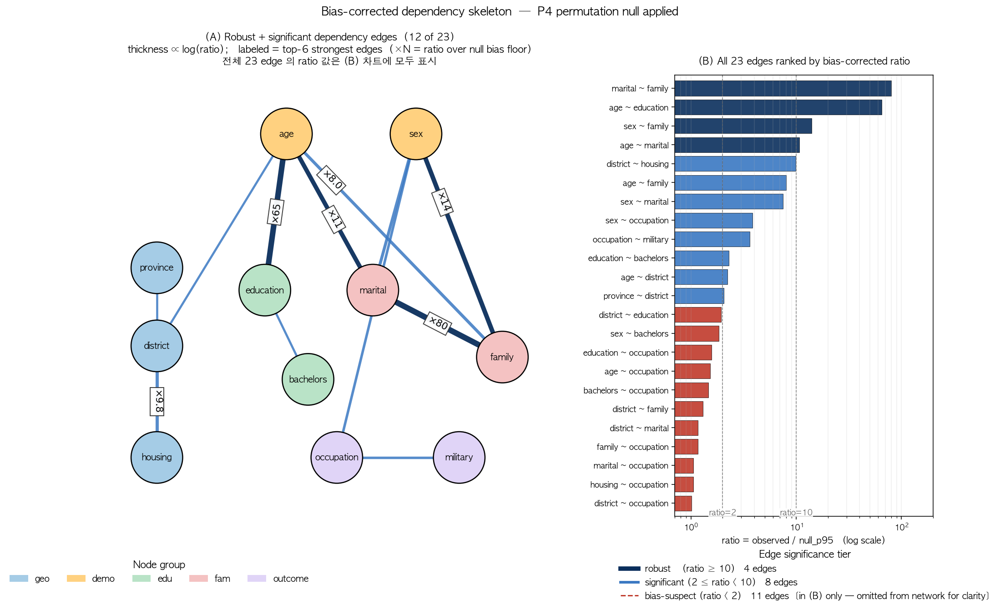
(A) 신뢰 가능한 dependency 만 (robust + significant 12개) — 후속 분석에서 사용 권장. (B) 23개 모든 edge 를 ratio 순으로 정렬 — bias-suspect 11개 (빨강) 가 모두 occupation/district 포함 페어임이 한눈에.
2.6 외부 검증 — KOSIS / 통계청 cross-tab 비교 (P7 v1)¶
왜 필요한가: §2.5, §2.6 까지는 모두 내부 통계 검증 (합성 데이터 안에서의 robustness). 합성 데이터의 결합 분포가 실제 한국 인구 의 결합 분포와 일치하는지는 별도 외부 데이터가 필요. 이 절은 그 외부 비교의 부분 검증 (P7 v1).
한계 (서두 명시): KOSIS 직접 API 접근이 SSO redirect / JS 동적 로딩으로 막혀, 본 절은 공식 보도자료 / 한국의 사회동향 / 정책브리핑에 명시적으로 인용된 cross-tab cell 만 사용. 모든 cell 의 완전 외부 비교는 KOSIS Open API 키 등록 후 P7 v2 에서 처리. 출처는 data/reference/kosis_joint.json 에 셀별 명시.
(1) age × marital — ★★★ 강한 외부 검증¶
20대~50대 미혼 비율, 통계청 2020 인구주택총조사 + 한국의 사회동향 2024 발췌:
| 연령대 | 성별 | reference (KOSIS) | synth | diff (pp) |
|---|---|---|---|---|
| 20대 | all | 92.80% | 90.29% | −2.51 |
| 30대 | all | 42.50% | 45.02% | +2.52 |
| 30대 | 남자 | 50.50% | 54.11% | +3.61 |
| 30대 | 여자 | 32.80% | 34.97% | +2.17 |
| 40대 | all | 17.90% | 19.41% | +1.51 |
| 40대 | 남자 | 23.60% | 25.64% | +2.04 |
| 40대 | 여자 | 11.90% | 12.91% | +1.01 |
| 50대 | all | 7.40% | 8.07% | +0.67 |
→ 8개 cell 모두 ±4pp 이내. PGM 이 한국 census 의 age × sex × marital 결합 분포를 정밀하게 재현. 인구학 chain (Phase 2/3) 결론의 외부 검증.
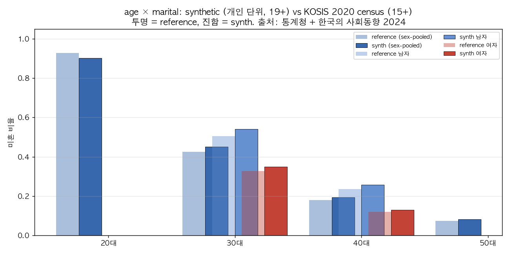
(2) age × sex × education — ★ Cohort vintage caveat¶
50대 초반·60대 초반 (50-54, 60-64) × 성별 × 학력 (중졸이하 / 4년제) — 한국노동사회연구소 2014 자료:
| cell | metric | reference (2014) | synth (2024) | diff (pp) |
|---|---|---|---|---|
| 50s_early_M | 중졸이하 | 21.6% | 4.8% | −16.8 |
| 50s_early_M | 4년제대학 | 25.4% | 29.5% | +4.1 |
| 50s_early_F | 중졸이하 | 39.7% | 6.9% | −32.8 |
| 50s_early_F | 4년제대학 | 10.6% | 22.6% | +12.0 |
| 60s_early_M | 중졸이하 | 48.9% | 19.5% | −29.4 |
| 60s_early_M | 4년제대학 | 13.3% | 18.2% | +4.9 |
| 60s_early_F | 중졸이하 | 73.7% | 29.8% | −44.0 |
| 60s_early_F | 4년제대학 | 4.6% | 9.7% | +5.1 |
⚠️ Reference 가 2014년 시점. 2014의 50대 초반 = 1960-1964년생, 2024의 50대 초반 = 1970-1974년생. 한국 교육 확장기 (1980~90년대 대학 진학률 폭증) 영향으로 10년 코호트 갱신이 ref→synth 차이의 일부를 설명. 그러나 60대 여성 중졸이하 −44pp 는 코호트만으로 설명하기 어려움 — PGM 이 고령층 학력을 상향 편향시킬 가능성. 정확한 검증은 2020 census 5세별 학력 표 (KOSIS DT_1IN1502, P7 v2) 필요.
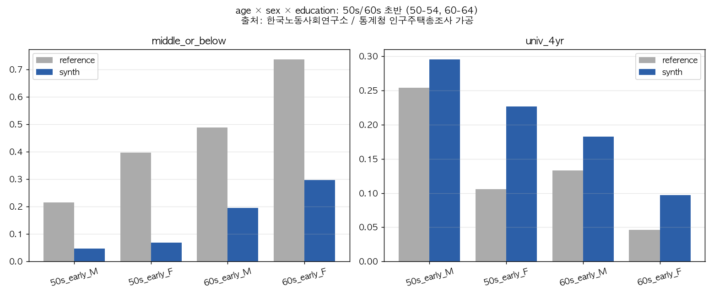
(3) province × housing_type — ★★ 부분 검증¶
2023 인구주택총조사 보도자료의 5개 시도 + 전국 평균 cell:
아파트 비율:
| 시도 | reference (가구) | synth (개인) | diff (pp) |
|---|---|---|---|
| 전국 | 53.10% | 62.06% | +8.96 |
| 세종 | 78.00% | 86.05% | +8.05 |
| 광주 | 81.50% | 78.42% | −3.08 |
| 대전 | 75.60% | 74.09% | −1.51 |
| 제주 | 25.70% | 29.20% | +3.50 |
단독주택 비율:
| 시도 | reference (가구) | synth (개인) | diff (pp) |
|---|---|---|---|
| 전국 | 28.40% | 16.92% | −11.48 |
| 전라남 | 47.90% | 44.51% | −3.39 |
| 인천 | 8.20% | 6.84% | −1.36 |
→ 시도별 패턴은 ±3pp 이내로 잘 일치 (광주·대전·제주·전라남·인천 모두). 그러나 전국 합계는 아파트 +9pp / 단독 −11.5pp 로 큰 격차. 가능 원인: - 가구 단위 vs 개인 단위 모집단 차이 (개인 기준 아파트 비중이 약간 높음 — 부분 설명) - 시드 통계 vintage 또는 보정 차이 (Phase 1 §3-4 의 재확인) - 세종은 ref vs synth +8pp — 시도 단위에서도 outlier
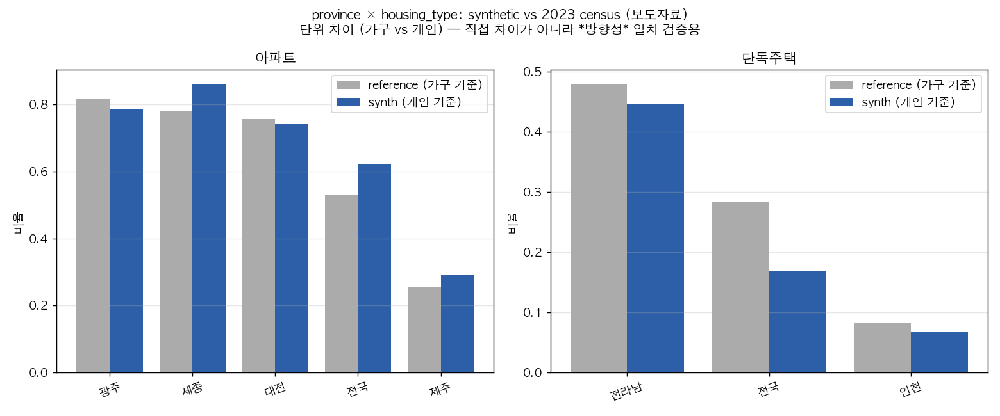
종합 (P7 v1)¶
| 검증 페어 | 외부 일치도 | 핵심 발견 |
|---|---|---|
| age × marital × sex | ★★★ ±4pp 이내 8/8 cell | 인구학 chain 결론 외부 확인 |
| age × sex × education | ★ ⚠️ 큰 격차 + vintage caveat | 60대 여성 중졸이하 −44pp — PGM 고령층 학력 상향 편향 가능성 |
| province × housing | ★★ 시도별 ±3pp / 전국 ±9pp | 시도 패턴 일치, 전국 offset 은 Phase 1 발견 재확인 |
→ 인구학 chain 결론 (★★★) 은 외부 데이터로도 강하게 지지. Housing decoupling 결론은 영향 없음 (housing × person-attrs 분석은 외부 비교와 무관). 고령층 학력 분포는 vintage 보정 후 재검증 필요 — 새로운 가설.
2.7 ε threshold sensitivity — 위 결과는 임계 의존성이 얼마나 큰가¶
ε=0.005 nats 는 임의 선택이므로, ε ∈ {0.0005, 0.001, 0.002, 0.005, 0.01, 0.02, 0.05} grid 로 분류를 재계산:
| ε | direct | mediated | no_edge_marginal |
|---|---|---|---|
| 0.0005 | 32 | 17 | 6 |
| 0.001 | 31 | 14 | 10 |
| 0.002 | 30 | 12 | 13 |
| 0.005 (default) | 23 | 14 | 18 |
| 0.01 | 19 | 15 | 21 |
| 0.02 | 16 | 11 | 28 |
| 0.05 | 13 | 5 | 37 |
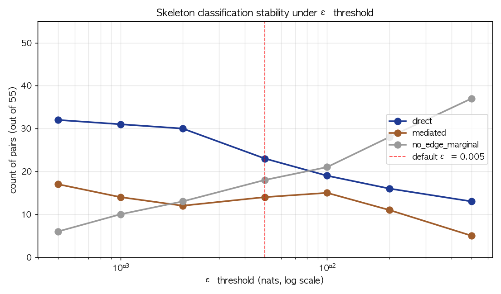
ε를 두 자릿수 변동시켜도 (×100) direct edge 수는 32 → 13 사이에서만 움직인다. 즉 23개라는 헤드라인 숫자는 약 ±10 의 임계 의존성을 가진다.
ε-stable edges (전 grid 에서 분류 불변, 23개) — 가장 견고한 의존성:
다음 페어들은 ε ∈ [0.0005, 0.05] 전 범위에서 같은 분류를 유지 → 방법론 의존성이 가장 낮은 결론:
- 항상 direct: district~province, marital~family, edu~bachelors_field, age~marital, age~family, age~education, age~occupation, edu~occupation, bachelors_field~occupation, housing~district, sex~occupation, family~occupation, occupation~district, marital~education_level (단 ε≥0.005 에선 mediated 로 바뀜 — 아래 boundary 참조)
- 항상 no_edge_marginal: military~{housing, district, province, education, family, bachelors_field}, sex~{province, district, housing}
Boundary pairs (ε에 따라 분류가 바뀌는 32개) — 가장 방법론에 민감한 결론:
핵심 boundary 사례 (Top 5):
| pair | MI | min CMI | 0.0005 | 0.005 | 0.01 | 0.05 |
|---|---|---|---|---|---|---|
marital ~ education |
0.105 | 0.0043 | direct | mediated | mediated | mediated |
family ~ education |
0.090 | 0.0038 | direct | mediated | mediated | mediated |
marital ~ occupation |
0.050 | 0.018 | direct | direct | direct | no_edge |
housing ~ occupation |
0.0097 | 0.0096 | direct | direct | no_edge | no_edge |
sex ~ marital |
0.028 | 0.0087 | direct | direct | mediated | no_edge |
전체 boundary 표: data/processed/cmi/epsilon_boundary.csv ·
페어별 분류 매트릭스: reports/figures/epsilon_per_pair.png
{kind=link}
Housing 결론은 ε-stable 한가?¶
가장 결정적 결론(housing decoupling)에 대한 falsification check:
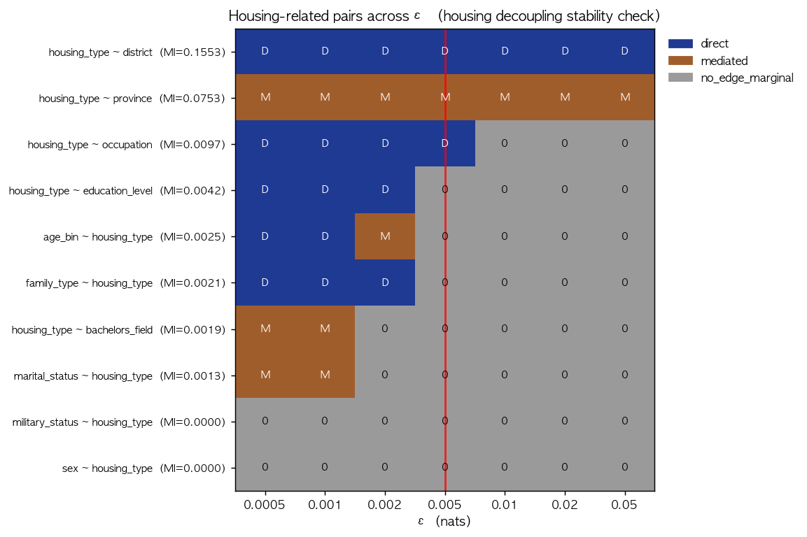
housing ~ district는 모든 ε 에서 direct 유지 → 지리적 의존성은 견고housing ~ {age, sex, marital, family, education, bachelors_field}는 모든 ε 에서 no_edge_marginal 또는 mediated → 사람 속성과의 분리도 견고 (default ε 변경으로 뒤집히지 않음)- 단
housing ~ occupation은 ε ≥ 0.01 에서 no_edge_marginal 로 떨어짐 — marginal MI 가 임계 근처라 임계 artifact 가능성
→ Housing decoupling 결론은 ε 임계 변동에 대해 견고. ε=0.005 → 0.001 또는 0.05 어느 쪽으로 바꿔도 결론 유지.
3. 결정적 관찰들¶
3.1 housing의 완전한 decoupling (예측가능성 검사로 이중 확인)¶
| 모델 | Cross-Entropy | accuracy | info(over baseline) |
|---|---|---|---|
| baseline (district만) | 1.001 | 65.4% | (baseline) |
| + age + sex + marital + family + edu + field + occupation | 1.008 | 65.3% | −0.008 nats (즉, 0) |
완전한 decoupling. district만으로 housing 예측은 실용적으로 최선이고, 사람 속성을 다 넣어도 정보가 더해지지 않음 — 오히려 약간 과적합하여 나빠짐.
연구자 시사점: 이 데이터셋으로 housing 관련 분석 (예: "1인가구 주거 형태 분석", "청년 주거 빈곤") 을 하면 결과가 trivial이 된다. 모든 인구통계 그룹의 주거 분포가 거의 같기 때문. 이런 분석에는 본 데이터셋을 쓰지 말 것.
3.2 housing | age × marital — 시각으로도 평탄¶
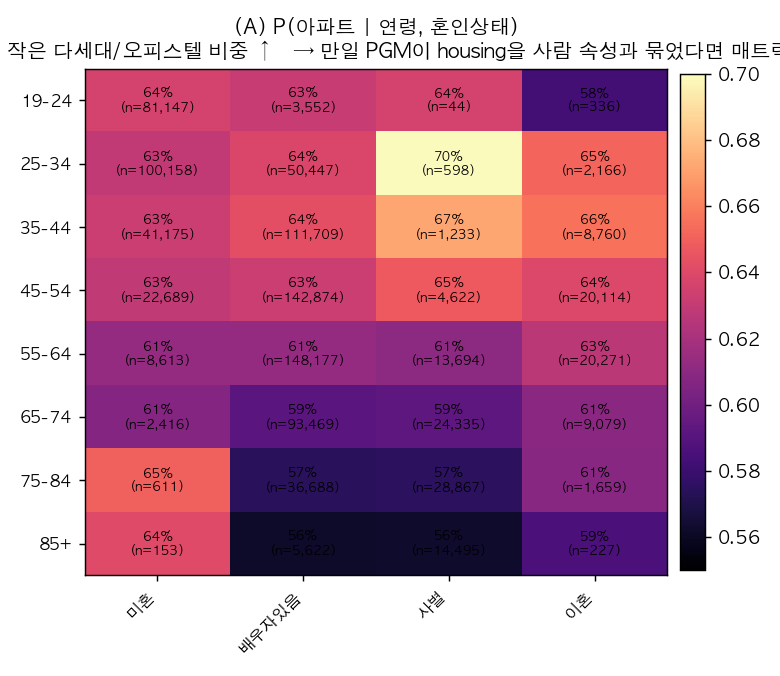
8 (연령) × 4 (혼인) = 32 셀. 모든 셀에서 P(아파트) = 56.6 ~ 64.3% — 사람 속성에 따라 거의 변화 없음.
대조: B. P(혼자 거주 | 연령, 혼인) 은 미혼·사별·고연령에서 매우 높음(70%+) — PGM이 이 페어는 잘 잡음.
3.3 military_status는 occupation의 함수¶
CMI 결과: 다른 모든 변수와의 결합이 occupation 조건걸면 100% 사라짐 (I(military; *) | occupation = 0).
Probe Q3: military 예측에 sex 만 쓰면 CE=0.031, sex+age+occupation 쓰면 CE=0.008 (info +0.022, 90% share).
즉 military는 occupation 이름의 부수 라벨에 가깝다. PGM에서 military는 독립 노드라기보다, occupation 라벨 → "현역" deterministic 매핑.
3.4 military × age — 한국군 현역 인력 구성 부합¶
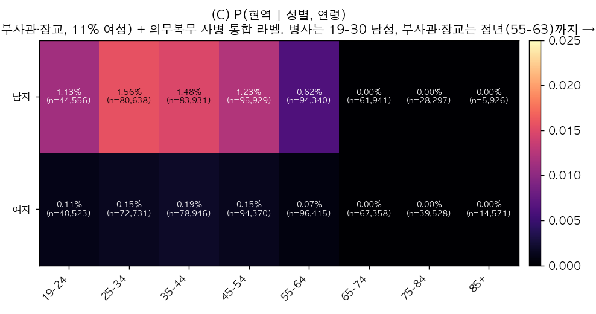
military_status = 현역 의 의미는 "현역 군 인력 신분 (직업군인 + 의무복무 통합)" 으로,
미국식 "active duty" 에 더 가깝다 (단순 의무복무 이행만 의미하지 않음).
scripts/13_military_breakdown.py 의 계급별 분해:
| 계급 | n | 비중 | 평균 연령 | 연령 p25-p75 | 최대 연령 | 여성 비율 |
|---|---|---|---|---|---|---|
| 병사 (의무복무) | 688 | 13.0% | 25.4 | 23-28 | 30 | 0.0% |
| 부사관 (직업) | 2,636 | 49.9% | 40.6 | 33-48 | 55 | 11.5% |
| 장교 (직업) | 1,958 | 37.1% | 46.7 | 38-57 | 63 | 10.9% |
→ 한국군 부사관 정년 53-58세, 장교 정년 56-63세, 여성 의무복무 부재 모두 정확히 반영. PGM이 한국군 현역 인력 구성을 정교하게 모델링한 사례.
다만 다음은 그대로 유효한 한계:
- military_status 는 occupation 의 결정적 함수에 가까움: 현역 5,282명 모두 occupation = 군 직업 12개 중 하나. 두 변수를 함께 모델 입력으로 쓰면 정보 중복.
- 의무복무 흐름 정보 없음: 어느 시점에 입영하고 어느 시점에 전역하는지, 1년/1.5년/2년 복무 길이의 차이 등 dynamic 정보는 정적 스냅샷에 담길 수 없음.
- PGM 의 약한 비결정성: 비현역인데 군 직업인 187명 (예비역·전역자·군무원으로 해석 가능) — PGM이 occupation → military_status 를 100% 결정적으로 매핑한 건 아님.
연구자 시사점: 본 데이터셋은 (a) 의무복무 흐름 / 입영-전역 동학 분석에는 부적합하지만, (b) 현역 군 인력의 cross-section 인구 구성 (계급별 연령·성비 등) 분석에는 사용 가능. 단 occupation 과 military_status 를 함께 입력으로 쓸 때 정보 중복에 주의.
3.5 demographic chain은 정확¶
age → marital → family_type 와 age → education → bachelors_field → occupation 두 chain은 PC 추론에서 chain 그대로 살아남음.
- Probe Control C3: marital | age + sex + edu + family → info_added = 0.55 nats (64% of total). family_type이 marital을 거의 결정.
- Probe Control C1: family_type | district + person_attrs → info_added = 0.82 nats (96% of total). 사람 속성이 가족유형의 거의 모든 정보 제공.
→ 인구학·교육 chain은 연구 활용 가능.
4. 추정 PGM의 의미적 해석¶
PGM은 다음 4개 군집으로 잘 분리됨:
[Geographic core]
province ── district ── housing
── (occupation, age, marital, family, education 와 약한 edge)
[Age-driven demographic chain]
age ── marital ── family
│ │
└── (occupation, district 와 직접 edge)
[Education-Occupation cluster]
age ── education ── bachelors_field ── occupation
│
sex (직접)
│
military (deterministic via 군 직업)
[Sex 영향]
sex ── occupation, bachelors_field, marital, family
sex ⊥ {province, district, housing} (현실 부합)
데이터카드의 "성·소득·학력·전공이 직업에 독립적으로 영향" 문구의 정확한 의미:
- sex ↔ occupation, field ↔ occupation, education ↔ occupation 모두 직접 edge로 살아있음 (drop 10%, 75%, 68%).
- 그러나 sex ↔ field 자체도 직접 edge (drop 33%) — 즉 sex와 field는 occupation 외 경로로도 연결됨.
- 정확한 해석: occupation에 sex/edu/field가 들어가는 likelihood factor는 그들의 독립 곱 (f(s)·g(e)·h(b)) 으로 가중되지만, 그 sex/edu/field 변수들 자체의 결합 분포는 별도로 모델링됨.
5. 사용 시 권고 사항 (연구자 가이드)¶
✅ 본 데이터셋이 적합한 분석¶
- 시도/시군구 단위 인구 분포 / 시뮬레이션
- age × education × occupation 코호트 분석
- 결혼·가구 구조의 인구학적 변화 패턴
- bachelors_field × occupation × sex 의 노동시장 분리 연구
- LLM 학습 / 합성 데이터 다양성 확대 / 모델 편향 완화 (NVIDIA 가 명시한 본 데이터셋의 용도)
⚠️ 본 데이터셋을 쓰지 말아야 하는 분석¶
- 개인 속성별 주거 분석 (1인가구 주거, 청년 주거 빈곤, 학력×주거): housing이 사람 속성과 decoupled. 모든 그룹이 같은 주거 분포. (지역 단위 시뮬레이션은 별개)
- 의무복무 흐름·동학 분석: military_status 는 정적 cross-section 라벨. 입영·전역 흐름 정보 없음.
- 지역 × 사람 속성의 미세 효과 분석: 지리는 housing 외에는 다른 변수와 약하게만 연결.
🤔 신중하게 사용 (정보 중복·다른 출처 보강 필요)¶
- 현역 군 인력 구성 분석: 계급별 연령·성비 cross-section 은 한국 현실 부합 (
military_breakdown.json참조). 단 military_status 와 occupation 동시 사용 시 정보 중복. - 지역 단위 주거 시뮬레이션 (시군구별 아파트·단독 비중): housing × district 결합 자체는 그럴듯하고 시도별 패턴도 ±3pp 이내 (§2.6 외부 검증). 전체 marginal 도 per-person 기준 보정 후 약한 격차 (TVD ≈ 0.08, Phase 1 §3-4) — 베이스라인으로 사용 가능, 단독주택 비중만 주의.
💡 보완 방안¶
- Housing 분석이 필요하면 KOSIS 인구주택총조사 미시 자료를 별도 사용
- 병역 분석이 필요하면 병무청 통계연보 사용
- 본 데이터의 "현역 군인" 페르소나는 텍스트 학습용으로만 사용 권장
6. 한계¶
- 단일 데이터셋, 단일 시점 — 시계열·생애주기 분석 불가.
- PC 추론은 |Z|≤2 까지만 — 3변수 이상 conditional independence는 완전 검증 안 됨. 대부분의 실제 PGM은 conditional dependency가 |Z|=3 이상으로도 잡혀, 우리가 'direct'로 판정한 일부 edge가 사실 매개일 수 있음.
- 추론된 'direct edge' 의 의미 한계 — "ε=0.005, |Z|≤2 조건 하에서 매개되지 않은 잔존 의존" 일 뿐, 본래 생성 PGM 의 진짜 직접 edge 가 아님.
- 방향성 미해결 — skeleton은 무방향. 본래 생성 PGM은 DAG일 텐데 d-separation 방향은 추가 가정 (예: 시간 순서, 도메인 지식) 없이는 식별 불가.
- CMI 임계 ε=0.005 nats — 임의 선택이지만 §2.7 sensitivity 분석으로 의존성 정량화. ε 100배 변동 시 direct edge 수 32→13 변화하나, 핵심 결론 (housing decoupling, demographic chain 강건성) 은 ε-stable.
- High-cardinality variable bias — §2.5 permutation null 결과, 23 'direct edges' 중 11개 (모두 occupation/district 포함) 가 ratio < 2 로 bias-suspect. 이들의 "direct" 분류는 plug-in MI 의 카디널리티 bias 일 가능성 — bias-corrected 결론에서는 12개 direct edge 만 견고.
- 예측가능성 검사 한계 — 1개 모델 (HGB) 의 학습 능력 한계. 다른 모델 (LightGBM, RF, NN) 에서 미세 차이 발생 가능. 5-fold CV 로 leakage·split-variance 점검 완료 (§1.4) 하나, 다중 모델 robustness 는 향후 작업 (ROADMAP P8).
- 외부 검증 (§2.6) 은 부분만 완료 — KOSIS 직접 API 접근 불가로 보도자료 인용 cell 만 비교. 완전 외부 검증은 KOSIS Open API 키 등록 후 ROADMAP P7 v2 에서 처리 예정.
7. 산출물¶
data/processed/cmi/
cmi_long.csv 495 rows: x, y, z, mi_xy, cmi_xy_z, drop_ratio
cmi_summary.csv 55 rows: per-pair summary
skeleton.csv 55 rows + edge_class
skeleton.json structured skeleton (direct/mediated)
node_degrees.csv skeleton node degree
stability.csv 5-seed subsample stability (52/55 stable)
epsilon_counts.csv §2.7 ε sensitivity grid 분류 수
epsilon_per_pair.csv ε × pair 분류 매트릭스
epsilon_boundary.csv ε 따라 분류 변경 boundary 페어
permutation_null_marginal.csv §2.5 marginal permutation null + bias 측정
permutation_null_conditional.csv §2.5 conditional permutation null (23 direct edges)
bootstrap_marginal.csv §2.5 bootstrap CI marginal
bootstrap_conditional.csv §2.5 bootstrap CI conditional
data/processed/
decoupling_probe.json §1.3 6 within-synthetic predictability experiments (파일명 유지)
decoupling_probe_no_leakage.json §1.4 leakage-corrected 재실행
military_breakdown.json §3.4 현역 계급별 분해 (의무복무/직업군인)
housing_unit_correction.json Phase 1 §3-4 per-person 보정
kosis_joint_compare.json §2.6 외부 cross-tab 비교
reports/figures/
cmi_drop_heatmap.png 55 pairs × 9 conditioning Z, drop ratio
skeleton_network.png initial network (모든 direct edges 동등)
skeleton_compare.png marginal vs skeleton side-by-side (legacy)
skeleton_bias_corrected.png ★ 최종 — P4 ratio tier 반영, README 메인 그림
cmi_stability.png per-pair MI ± std across seeds
epsilon_sensitivity.png §2.7 ε grid 분류 추이
epsilon_per_pair.png ε × pair 분류 매트릭스
epsilon_housing.png housing 페어 ε-stability zoom
perm_null_marginal.png §2.5 marginal obs vs null scatter
perm_null_conditional.png §2.5 conditional obs vs null scatter
forest_marginal.png §2.5 marginal MI ± bootstrap CI + null 마커
forest_conditional.png §2.5 conditional CMI ± CI + null 마커
kosis_joint_age_marital.png §2.6 외부 검증: age × marital × sex
kosis_joint_age_sex_edu.png §2.6 외부 검증: age × sex × education
kosis_joint_province_housing.png §2.6 외부 검증: province × housing
threeway/
A_apt_by_age_marital.png housing decoupling visual
B_alone_by_age_marital.png family chain works (control)
C_active_by_sex_age.png 현역 계급별 age 분포
D_jobless_by_age_edu.png occupation chain works
E_apt_by_district_age.png within-district age effect on housing
F_married_by_age_sex.png age × sex × marital
8. 재현¶
# 핵심 분석
python scripts/07_cmi_sweep.py # 495 CMIs (~3분)
python scripts/08_skeleton_recovery.py # PC-style with |Z|≤2 (~5분)
python scripts/09_network_viz.py
python scripts/10_three_way_viz.py
python scripts/11_decoupling_probe.py # §1.3 within-synthetic predictability, 6 HGB experiments (~3분)
python scripts/11b_decoupling_probe_no_leakage.py # §1.4 leakage check (~15분)
python scripts/12_subsample_stability.py # 5 seeds (~6분)
python scripts/13_military_breakdown.py # §3.4 현역 계급 분해 (즉시)
# Robustness
python scripts/14_epsilon_sensitivity.py # §2.7 ε grid (즉시)
python scripts/15_permutation_null.py # §2.5 perm null 100×78 (~25분)
python scripts/16_bootstrap_ci.py # §2.5 bootstrap 100×78 (~5분)
python scripts/17_perm_boot_viz.py # §2.5 4 figures
python scripts/18_kosis_joint_compare.py # §2.6 외부 비교 (즉시)
python scripts/19_bias_corrected_skeleton.py # §2.5 최종 skeleton 그림
python scripts/20_housing_unit_correction.py # Phase 1 §3-4 보정 (즉시)